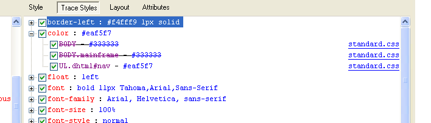

29th August 2011
I recently did a knowledge share at work on how to write efficient CSS, and one of my colleagues - a senior developer with a lot of experience - said "I felt the penny drop". High praise indeed, so I thought it was worth reproducing it here.
The write-up is pretty long, so I've divided the articles into Basic CSS in which I cover:
- CSS
- Selectors
- The Cascade
- Inheritance
and Evaluation of CSS in which I cover how CSS is evaluated and some things we can do to make it more efficient.
How CSS is Evaluated
The key information is these two points:
- For each element, the CSS engine searches through style rules to find a match.
- The engine evaluates each rule from right to left, starting from the rightmost selector (called the "key") and moving through each selector until it finds a match or discards the rule.
1. For each element, the CSS engine searches through style rules to find a match
The style system breaks rules up into four categories by key selector.
- ID Rules - for example button#backButton { ... }
- Class Rules - for example button.toolbarButton { ... }
- Tag Rules - for example treeitem > treerow { ... }
- Universal Rules - all other rules
The CSS engine then takes each html element in the document in turn. If it has an ID, then the engine searches through the style rules and checks rules that match that element's ID. If it has a class, only Class Rules for a class found on the element will be checked. Only Tag Rules that match the tag will be checked.
Universal Rules will always be checked.
2. The engine evaluates each rule from right to left...
So in the example button#backButton { ... } the key is the id "backButton". In the example I give in Basic CSS the key is the class "blog-post".
The engine starts with the key and then evaluates the rule from right to left. So if you have a button with an id of "backButton", the engine first matches the id to the id and then compares the next selector - is the element a button? In the example from Basic CSS the evaluation for the second selector, ul#nav.dhtml li a.blog-post, is as follows. Does the element have a class of blog-post? If so, is it a link? If so, is there anywhere in its ancestry a list item? If so, is there anywhere in the ancestry of that list item an unordered list element with a class of dhtml and an id of nav?
You may be getting a slight clue now as to why I think that selector is inefficient.
Recommendations
There are some obvious ways we can start here.
- Firstly, remove unused CSS. It's not like, for example, unused Java code which really just slows things down for other developers. The CSS engine is going to search through every rule for every element. The fewer rules required to check for a given element, the faster style resolution will be.
- Avoid use of descendant selectors - they speed up page development, but they slow down page rendering.
- Avoid qualifying ID selectors at all - as IDs should be unique so adding extra qualification is unnecessary and costly.
- It's a good idea to avoid use of html elements in selectors for a couple of reasons:
- The style will be lost of the element type is changed
- The less specific the key the greater the number of nodes that need to be evaluated
- Avoid use of child selectors. They are more efficient than descendant selectors, but they are still inefficient: for each matching element, the browser has to evaluate another node. It becomes doubly expensive for each child selector in the rule.
These are just recommendations as to how to write the CSS. If you care about your website's performance you should already be minimising and gzipping your CSS. So how much of an edge will these recommendations give you?
CSS and Performance
CSS and performance is a fairly hot topic right now, especially with all the cool things that you can do using CSS3. Dave Hyatt, architect for Safari and Webkit, said "The sad truth about CSS3 selectors is that they really shouldn't be used at all if you care about page performance." (The comment can be found here).
That's certainly something I've heard, for example at conferences. However, another web giant, Steve Souders (works at Google on web performance) has a different opinion. It's worth reading the article in full (there are charts and everything!), but the takeaway here is: "On further investigation, I'm not so sure that it's worth the time to make CSS selectors more efficient. I’ll go even farther and say I don’t think anyone would notice if we woke up tomorrow and every web page's CSS selectors were magically optimized."
So why am I bothering with this? Well, a few reasons. One is I think it's always worth taking the time to find out how things work and I'm glad to be able to make a reasoned judgment on this.
But also, there are various things to consider when thinking about writing efficient CSS. There is performance, obviously, but two other major concerns are ease of writing and (in my view more important) ease of reading. I love clean code, and I think it's crucial that code is easy for other developers to read. I'm not sure I care whether or not ul#nav.dhtml li a.blog-post is performant or not, it's certainly not clean, and it took me some brow furrowing to work out when it would apply. So personally, I'm going to follow the rules I've outlined above. What do you think? I'd love to hear your opinion.
Useful Further Reading
I gleaned most of the information about how the CSS engine works from Page Speed documentation and the Mozilla blog. I couldn't find any information about how IE evaluates CSS, please do let me know if you have any.
To take things further with writing nice CSS, you could look at Compass/SASS, or my current favourite, OOCSS.
6th August 2011
I recently did a knowledge share at work on how to write efficient CSS, and one of my colleagues - a senior developer with a lot of experience - said "I felt the penny drop". High praise indeed, so I thought it was worth reproducing it here, even though other similar articles are available on the internet.
The write-up is pretty long, so I've divided the articles into Basic CSS in which I cover:
- CSS
- Selectors
- The Cascade
- Inheritance
and Evaluation of CSS in which I cover how CSS is evaluated and some things we can do to make it more efficient.
CSS
For those who have no idea at all what CSS is, I can recommend nothing better than the w3schools excellent intro. The w3school is always my first port of call for definitive answers on html, CSS and JavaScript. I will assume that you at least know that CSS stands for Cascading Style Sheets, and realise why separating that from html can make development easier.
Syntax
CSS is applied to html elements using selectors. The syntax of CSS is:
selector { CSS property : value; }
If you want to add comments, use /* comment */
as C-style comments (//) will cause your CSS to fail silently - all you'll see is your website looking wrong.
Let's look at some more details of how CSS is written.
a.blog-post, ul#nav.dhtml li a.blog-post {
display: block;
float: right;
height: 24px;
width: 24px;
margin: 3px 3px 0 0;
padding: 0 0 0 0;
background: url(../images/film_help.png) no-repeat;
}
Padding and the box model
If you've ever worked with CSS at all, no doubt you have fiddled around changing the padding or the margin without actually knowing why. I certainly did. Until I saw this diagram, which suddenly made everything clear:

Have a look at the page on w3schools, but basically the margin is how far the box is from other elements, and the padding is how much space you'd like between the inside of the box and the content. Genius. And obviously, although not given in the CSS example above, you can manipulate the border too, as I have done in my code samples on this page, for example border-style: dashed;
Padding and Margin shortcuts
It is possible to specify each direction of the padding, for example padding-left:3px. However you can also use a shortcut, as has been done in the example. The order is like a clock: Top, Right, Bottom, Left; so an element with the CSS in the example applied to it will have a margin on the top and the right. Another way to remember this is by remembering that if you don't get it right there will be TRouBLe. :o)
However, you can make it even shorter than that. Three values set the top to the first, the right AND left to the second and the bottom to the third. For example:
margin:10px 5px 15px;
top margin is 10px
right and left margins are 5px
bottom margin is 15px
Two values set the top and bottom to the first, and the right and left to the second, and one value sets them all to the same. Here if you didn't follow that.
Ems
Sizes can be given in pixels, ems or percentages. Pixels you know. Percentages are as a percentage of the enclosing elements (see inheritance). Ems are also calculated as percentages, where the default for most browsers is that 1em = 16px. However (of course) there is a slight twist in that ems are not calculated correctly in IE, so .85em is smaller than 85%. The w3schools recommendation is to use a combination of percentages and ems. The developer tools are invaluable in this respect and there is a useful discussion here.
In the meantime you might want to remember this hilarious joke: Q. What did one em say to the other em? A. Who's your daddy?
No-repeat
A brief word on the image. background: url(../images/film_help.png) no-repeat;. The url is a link to where you have stored the image. no-repeat means you want it to appear once. The default is for it to repeat both horizontally and vertically. A nice trick for filling in a background is to create a slim image with the gradiations you want and then repeat-x so it fills the div.
An aside: another way to include images is to instead use a data url. This is where you encode the image inline. The advantage of this is that it doesn't require an extra HTTP request to get the image, and the key to a faster website is minimising the HTTP requests. However, there are reasons (other than the ubiquitous incomplete cross-browser support) why you might not want to use data urls - a good discussion can be found here. Other ways to minimise the HTTP requests associated with loading images can be found here.
Optional;
The last semi-colon is optional. In fact, the structure of a CSS class is selector { CSS property : value } - you only need the semi-colon if you have subsequent instructions. I always put it in anyway though, there's no reason not to.
Selectors
There are loads of selectors in CSS. For now, I'll just talk about the most common:
html element
For example, p { color: red; } would make all text in paragraphs red.
#id
Giving the ID makes the one specific element behave in a certain way. It is certainly the most efficient selector (see how it's evaluated, but it isalso slightly pointless. The point of style is to make a website look and feel consistent - with your brand, with itself, etc. IDs are (supposed to be) unique on a page. So why would you want to style just one thing?
.class
The most common selector and the one I think we should all be using most of the time.
*
The universal selector. Some interesting discussion here, but in summary it is the least efficient selector and also allows you to bypass inheritance. I say AVOID.
Combinations
x, y
This means, apply the style you are outlining to all xs and all ys. For example p, .blog-intro { font-weight: bold; } makes the text in all paragraphs bold AND the text in all elements with the class "blog-intro".
x y
The descendant selector. This matches any y which is a descendant of any x. For example p .blog-intro { font-weight: bold; } makes all the text within a paragraph that has the class of "blog-intro" bold - even if it is nested several layers within. It is very inefficient. See later post
x > y
The child selector. This matches any y which is a child of any x. This is also inefficient, though less inefficient than the descendant selector.
a.blog-post, ul#nav.dhtml li a.blog-post
So, to return to the selector in the example which I have so far ignored.
To spell it out, the style outlined here will be applied to any link with the class of blog-post, AND any link with the class of blog-post which is a descendant of a list item which is itself a descendant of an unordered list with the id of nav and a class of dhtml.
Pretty complicated. Over-complicated, I will argue. But just to note - the reason you might want both of these (you might think the first would cover the second) is because you may well have one or more intermediate styles that have altered the link in the list item further. For example if you have styled ul#nav.dhtml differently, the link will appear differently unless you reset it here.
In my view, examples like this are why people do not like CSS. Oh, and this is a real example from a live application, by the way. Names slightly changed to protect the innocent.
The Cascade
As hinted at above, you can have multiple styles applied to an element, and the cascade is what determines which one is actually applied. CSS styles are cascaded in the following order, with the one applying last being the one that sticks:
- Origin (i.e. Browser then Author)
- Importance (normal vs !important)
- Specificity
- Inline
- Highest number of id selectors
- Highest number of class, attribute, or pseudo classes
- Highest number of elements and pseudo elements
- If still the same, the order in which they appear.
Here for (very dense) more.
Specificity
Selectors are considered to be specific in the following way (ordered from the least to the most specific):
- The type selector
- The descendant selector
- The adjacent sibling selector
- The child selector
- The class selector
- The attribute selector
- The ID selector
Here for more.
Order
The order, listed from the least precedence to the most precedence:
- Browser default
- External style sheet
- Internal style sheet (i.e. written in the head)
- Inline style (i.e. inside an HTML element)
Notes:
An external stylesheet will override an internal stylesheet if it's linked to in the head after the internal style sheet.
And the most common trip-up in legacy code systems: The same class within a CSS file will override one written higher up in that file.
important!
You will have seen that important! takes precedence in the cascade. This is what you add if you can't get the style you want using the normal rules of cascade and inheritance. Don't use it unless you really have to - to me, it says "I don't know how CSS works so I'm just going to hack it."
All modern browsers have developer tools so you can examine elements to see what CSS is being applied, and in a surprising departure from the norm, the best one in my opinion is the one available in IE when you press F12.
For example, in this screenshot you can see that the colour being applied here is the one from the class ul.dhtml#nav not the one specified for body or the one specified for body.mainframe.

Inheritance
I could not do a better job of writing up inheritance than this company presentation. I really recommend you go and click through it. It starts very simple and you may think it's a waste of your time but if you are not 100% sure how inheritance in CSS works then this will really help.
A brief summary though if you really can't be bothered: Elements inherit styles from the elements within which they are nested. So in the following html, if you apply a style of font-weight: bold to p, then the text inside the span will also be bold.
‹body›
‹p›I'm bold. ‹span›And so am I!‹/span›‹/p›
‹/body›
Read on for how to write it efficiently!
27th July 2011
Right, it turned out my next step was not a chat with Joe Halliwell but instead with my good friend and mentor, Dolan O'Toole, and what I thought might be a voyage of discovery into how to make my installation of firefox run like a normal program turned out to be just a short trip of discovery to finding out that I hadn't actually been looking in the right places.
After helpfully pointing out that I "sound like a linux newbie :)" (yes, yes I am), Dolan explained where I'd gone wrong: "You followed the instuctions as they are. The only thing you weren't aware of is that most of the time, someone would have done a build of a program for ubuntu and put it in an apt repository, usually on launchpad. I usually search for something like "firefox 5 ubuntu 10.10" if I need to install something before I resort to manual installations."
Good tip, and here it is:
http://www.webupd8.org/2011/06/firefox-5-lands-in-firefox-stable-ppa.html
So - I have learned that it's not quite as straightforward as finding the instructions and then following them - you also have to know stuff. That's OK though. And at least I have firefox the way I want it now. I'm sure there'll be another opportunity to get my hands dirty...
20th July 2011
So. Not content with the Ubuntu version of Firefox which is at 3.6.18, I decided that I wanted Firefox 5.0. Heck, I want 5.0.1.
So I followed these instructions.
To no avail. I followed them to the letter (or so I thought), but when I finished up by running firefox, to my joy, Firefox popped up, and to my moments later horror, it was still 3.6.18.
Why??
Well, lots of reasons why, as I discovered when I unistalled Firefox 3.6.18.
First of all, when it said "Run the following shell script" I just typed it into the console window. That did not work. Don't sigh, I'm new to this!
So I created the shell script and saved it. Following, incidentally, instructions here - the bit I was missing was the permissions: chmod +x myfirstscript.sh
[NB. I couldn't agree more with the grateful commenter on that link: "Everybody just writes "run the shell script" but a complete beginner doesn't know, that shell scripts have to be executable and are started with ./"]
OK I've run the script woo hoo! "The firefox command in your ~/bin directory will now run Firefox with the mozilla-build profile." I have the file, the file contains another script, that script should allow me to start firefox, right?
Wrong.
bash: /usr/bin/firefox: No such file or directory
Well that, presumably is why running the firefox command before started up the old firefox. (So - hey - I could have just run the script in the command line like I wanted!)
So, I decided to roll back a step and delete the new ~/bin directory - I didn't like it anyway. I discovered I could actually run Firefox, from the firefox directory, by running this command: exec "/home/anna/firefox/firefox" -P mozilla-build "\$@" . So I wrote a shellscript to do that.
So now I can run firefox. It's 5.0.1. But I have to run it from the command line. Closing Firefox doesn't close the terminal window, but that terminal window is taken up with running firefox (maybe there's a way round that like with gedit &).
A few other things. The firefox running remembers passwords. It remembers what I've set my home page to. But it doesn't start up on the home page even though I've asked it to. Agreeing to restart it does so. Behind the scenes, there are a couple of errors:
(firefox-bin:1923): Gtk-WARNING **: Loading IM context type 'ibus' failed
(firefox-bin:1923): Gtk-WARNING **: /usr/lib/gtk-2.0/2.10.0/immodules/im-ibus.so: wrong ELF class: ELFCLASS64
Ideally I want this firefox to run normally, i.e. be available on the menu, have an icon in the top panel, not to rely on a command window. I suspect my next port of call is to discuss this with Mr Joseph Halliwell. I hope there will be a part 2 where I turn out to have learned loads about this area!
22nd April 2011
Easy_install (as it comes) doesn't work for Debian-based systems.
The default behaviour is to install things to /usr/local/ - this is the Gnu default - whereas the synaptic package manager installs things to /usr/. I imagine there may be a way to reconfigure the default behaviour, but I didn't get that far.
This is how I found out this rather useful piece of information. I had installed easy_install, and then used it to download all the dependencies I needed to get started with this python/Django project I was going to work on. And then - nada.
For about three hours, no matter what I did, I had this message:
File "/usr/local/lib/python2.6/dist-packages/Django-1.3-py2.6.egg/django/db/backends/mysql/base.py", line 28, in
from django.db import utils
ImportError: cannot import name utils
My friend who was with me, trying to get me set up to start work on the project, is a Django expert, but he uses Windows. Hey, so do I! What am I even doing using linux? (See sidebar for answer...)
We tried a lot of things. I won't go into them all here, mainly because I can't remember many of them. We tried a lot of things that people on the internet had suggested. As a last resort, we even tried to RTFM. To no avail.
After we'd given up and my friend had left, I went back to it to try and figure out what was going on. I even tried to resort to the beginner standard of adding log messages, but all the files I wanted to edit were read-only. Finally, this page offered me a glimmer of a clue.
Specifically, the question "Where are my site-packages stored?" and the answer:
python -c "from distutils.sysconfig import get_python_lib; print get_python_lib()"
Which for me, returns /usr/lib/python2.6/dist-packages
Hang on though, the error is in /usr/local/lib . . . eh?
A visit to the python2.6 folder in /usr/local confirmed that all of the stuff I needed was in there. And a call to my incredibly helpful and talented friend Joe Halliwell confirmed my growing suspicion that this was Not Correct. He explained to me the Gnu/Debian folder structure differences.
So, I backtracked. I installed everything I needed (except sorl-thumbnail, which wasn't there. However, all I need to do is find a ppa. There is probably also another way to install it correctly. By the time this is all done, I may even know what it is.)
I ran through a few errors on the way, but all of the ImportError: No module named django_extensions variety, and solved one by one, satisfyingly, by installing what I needed in the correct way.
Finally, several hours after my friend came round to work on this, I now have a new error:
File "/usr/lib/pymodules/python2.6/MySQLdb/connections.py", line 170, in __init__
super(Connection, self).__init__(*args, **kwargs2)
_mysql_exceptions.OperationalError: (1045, "Access denied for user 'anna'@'localhost' (using password: NO)")
It's progress.